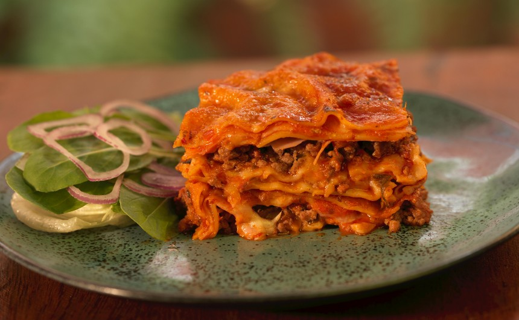

Lasagna Recipe

Ingredients
- Meat: This lasagna recipe starts with 1 pound of ground meat (1/2 pound ground pork, 1/2 pound lean ground beef).
- Onion: A diced onion is cooked with the ground meat.
- Canned tomatoes: You will need a can of tomato sauce and a can of crushed tomatoes.
- Parsley and Garlic: For fresh flavor, chop 2 tablespoons of parsley and crush 1 clove of garlic.
- Sugar: A pinch of sugar balances the acidity of the tomatoes.
- Spices and seasonings: This homemade lasagna is seasoned with dried basil, dried oregano, salt, and ground black pepper.
- Noodles: Lasagna noodles are required. This recipe calls for uncooked noodles, but you can use the oven-ready variety to save time.
- Cheese: he cheese layer is made up of cottage cheese and Parmesan. You will also need shredded mozzarella.
- Eggs: Three eggs make the cheese layer creamy and help bind it together.
Instructions
- Gather all ingredients.
- Combine pork and ground beef in a large skillet over medium-high heat and cook for 5 minutes.
- Add Onion and cook until translucent, about 5 minutes
- Stir in crushed tomatoes, tomato sauce, 1 tablespoon fresh parsley, garlic, basil, salt,
oregano, and sugar. Reduce heat to medium-low simmer, stirring occasionally, for 30 minutes
- Cook lasagna noodles in the boiling water, stirring occasionally, for 8 to 10 minutes.
- Mix cottage cheese, Parmesan cheese,
eggs, 1 tablespoon fresh parsley, salt, and pepper in a large bowl until combined.
- Assemble lasagna: Spread a spoon or two of sauce over the bottom of a 9x13-inch baking dish just to to coat it.
Place two layers of noodles over the sauce to cover.
- Layer with 1/2 of the cheese mixture, 1/2 of the remaining sauce,
and 1/2 of the mozzarella cheese. Repeat layers once more using
the remaining noodles, cheese mixture, sauce, and mozzarella. Cover
the baking dish with aluminum foil.
- Bake in the preheated oven for 30 minutes to 40 minutes, Remove the foil and bake until golden brown, 5 to 10 minutes.
- Remove from the oven and let stand for 10 minutes before cutting and serving
- Enjoy your delicious homemade lasagna!